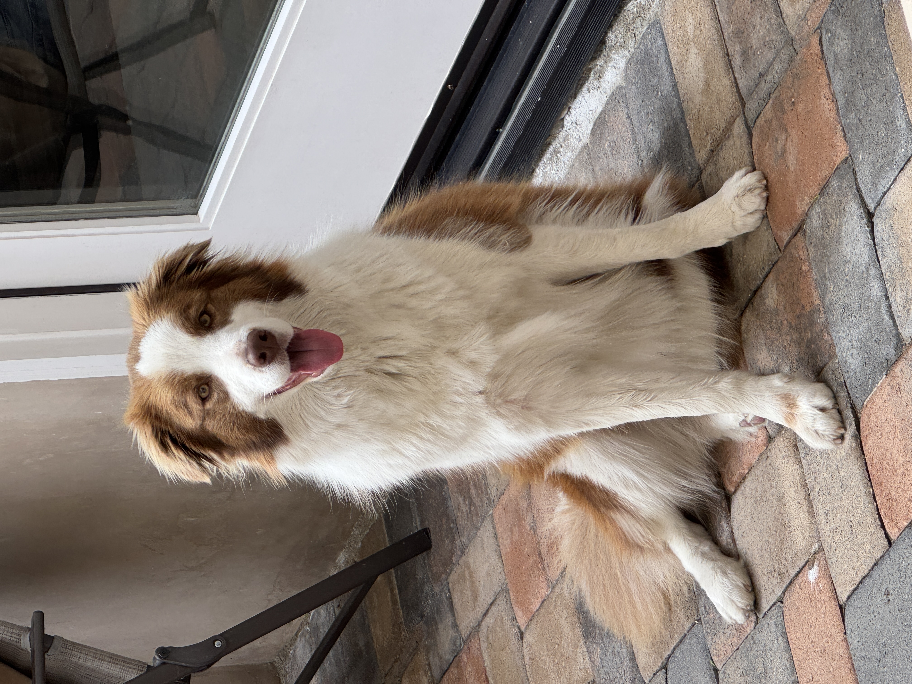

Holly Wang
About Me
Background
 Hi! My name is Holly Wang, and I’m a sophomore at Canyon Crest Academy. I was born in China and moved to the U.S. in eighth grade. This experience taught me how to adjust to new environments. It helped me become more confident, independent, and open-minded. I enjoy learning about both technology and psychology because they help me understand how people think and how the world works. Outside of school, I love spending time with my Border Collie, Coconut, and relaxing with music or watching anime.
Interests
 One of my biggest interests is
badminton. I’m a member of
my school’s badminton team, where I enjoy improving my skills and competing with my teammates.
The sport helps me stay active and focused while also teaching me
teamwork and patience. Besides sports, I like designing digital
projects and exploring new AI tools. In my free time, I often read
manga or listen to K-pop to unwind.
One of my biggest interests is
badminton. I’m a member of
my school’s badminton team, where I enjoy improving my skills and competing with my teammates.
The sport helps me stay active and focused while also teaching me
teamwork and patience. Besides sports, I like designing digital
projects and exploring new AI tools. In my free time, I often read
manga or listen to K-pop to unwind.
Future Goals
 In the future, I hope to study something related to Cognitive
Science, Artificial Intelligence, or business connected to
technology. I find it fascinating how AI can learn from human
behavior and emotions to create smarter systems. I’m also curious
about how psychology in AI could influence business and decision
making in the future. During the summer, I joined the
Wharton Global Youth AI Leadership Program
to explore how technology and human thinking work together.
In the future, I hope to study something related to Cognitive
Science, Artificial Intelligence, or business connected to
technology. I find it fascinating how AI can learn from human
behavior and emotions to create smarter systems. I’m also curious
about how psychology in AI could influence business and decision
making in the future. During the summer, I joined the
Wharton Global Youth AI Leadership Program
to explore how technology and human thinking work together.